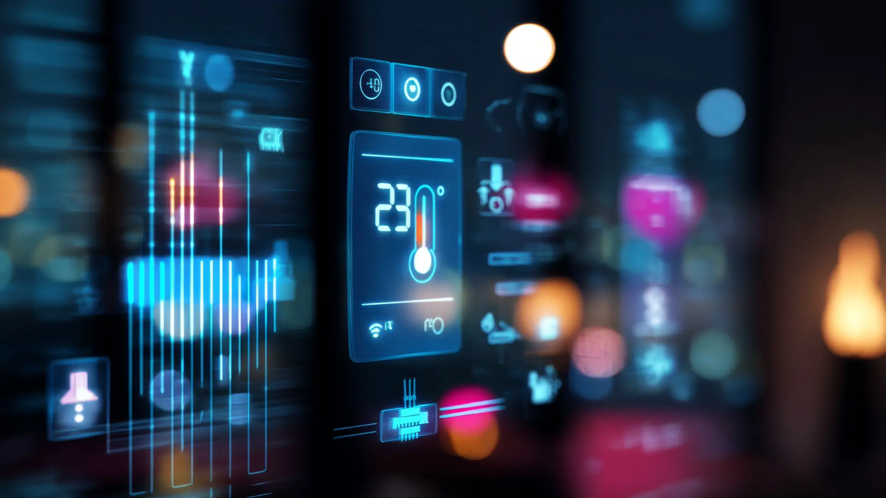

Managing critical transport assets means confronting a simple engineering truth: networks grow older while the demands placed on them continue to rise. Each year, thousands of kilometres of rail networks, embankments, and highway structures face the compounding effects of increased traffic volume and severe climate-induced stresses. Existing infrastructure requires immediate attention to help reduce operational risks, prevent costly downtime, and ensure public safety.
Across the globe, aging transportation networks are under unprecedented pressure. In the UK alone, the rail network relies heavily on thousands of Victorian-era earthworks, bridges, and tunnels that continue to carry heavy modern traffic. Combined with intense weather patterns, the threat of earthwork movement, sudden slope failure, or structural shifting is an ongoing and costly reality — a challenge that resonates just as deeply across India's rapidly modernising rail corridors and highway networks.
This article builds on insights from Worldsensing's Track to the Future
Beyond the Tracks: The Risks to Aging Infrastructure
Managing expansive transport networks requires continuous, proactive surveillance. As weather patterns become more unpredictable, traditional manual inspections and periodic data collection are often stretched to their limits. Environmental factors like saturated soils, heavy overgrowth, and shifting slopes can cause sudden changes that compromise track alignment in railways, or structural integrity if left unmonitored.
When these hidden geological risks affect active lines, the impacts reach far beyond network delays and financial costs. Unchecked structural movement can disrupt regional supply chains, cut off remote communities, and create critical safety hazards for passengers and crew, making early detection essential.
"By detecting movement early and providing actionable insights, these technologies help reduce risk, support informed decision-making, and allow asset owners to respond before failures occur." — Matt Azzopardi, Rail Infrastructure Director, Worldsensing
At Sentra, we believe this principle extends beyond early detection into the realm of predictive intelligence. While traditional monitoring answers "what is happening right now?", the next generation of infrastructure intelligence must answer "what will happen next month, next year, or in a decade?"
Collaboration in Action: The Power of Strategic Partnerships
While achieving total manual oversight of vast, sprawling infrastructure networks is impossible, the industry is moving in the right direction through powerful technical alliances. By combining domain expertise, robust structural engineering, and data platforms, infrastructure specialists can safely extend the lifespan of legacy assets.
A prime example of this collaborative approach was showcased at the recent "Track to the Future" event, hosted by infrastructure specialists DYWIDAG at the historic Keighley & Worth Valley Railway in the UK. This unique heritage railway setting provided the perfect backdrop to demonstrate how advanced technologies can step in to preserve and protect legacy assets.
At the centre of the day's live demonstrations was Smart Guard, DYWIDAG's integrated monitoring system. Fully powered by Worldsensing's Early Warning System, this solution provides asset owners with a comprehensive, near real-time overview of emerging hazards across rail, highways, energy, and broader civil infrastructure. By bringing together operators, engineers, and partners, the event proved that the right combination of field expertise and advanced digital intelligence can intelligently mitigate the risks of a legacy network.
Sentra's Perspective
Partnerships are the cornerstone of modern infrastructure resilience. At Sentra, we collaborate with engineering consultancies, infrastructure operators, and technology partners to deliver end-to-end monitoring solutions that span Structural Health Monitoring, geotechnical surveillance, and Digital Twin integration. The DYWIDAG-Worldsensing alliance is a powerful model for what the industry can achieve when expertise converges — and Sentra is committed to bringing that same collaborative ethos to every project we undertake.
Turning Insights into Action: Intelligent Wireless Monitoring
Deploying these modern capabilities means moving completely away from reactive maintenance toward the proactive early-warning systems Matt Azzopardi highlighted. Traditional manual inspections are not only slow, but they frequently put personnel in harm's way on live tracks or unstable slopes. Advanced wireless monitoring solves this operational challenge by providing a safe, continuous, and highly accurate view of structural movement without requiring constant trackside access.
The DYWIDAG Smart Guard system, powered by Worldsensing's IoT architecture, is built specifically to deliver this clarity in the toughest field conditions. Utilising long-range, low-frequency (LoRa) wireless connectivity, the hardware ensures reliable data transmission through dense vegetation, deep rock cuttings, and saturated soils. These autonomous, battery-powered devices operate with ultra-low power protocols, allowing them to remain deployed in remote environments for up to 10 years without maintenance.
By continuously beaming real-time data directly to a centralised visualisation platform, the system removes the need for hazardous manual measurements, allowing engineering teams to focus entirely on preventative data analysis. Explore our railway infrastructure monitoring solutions for comprehensive rail asset management.

Sentra's sensor ecosystem extends this capability further. Our wireless sensor portfolio — including tiltmeters, vibration meters, strain gauges, and GNSS receivers — is designed for the harshest environments, from tropical monsoon regions to arid desert corridors. With IP68-rated enclosures and edge-enabled data loggers that buffer up to 90 days of local storage, Sentra's infrastructure monitoring solutions ensure zero data loss even during connectivity outages.
The Digital Twin Revolution: Shaping the Future of Infrastructure
While wireless monitoring answers the question of what is happening to a structure right now, Digital Twin technology answers why it is happening and what comes next. This is where the future of infrastructure management truly takes shape.
A Digital Twin is a dynamic, real-time virtual replica of a physical asset — a bridge, tunnel, embankment, or entire rail corridor — that mirrors its current condition, behaviour, and performance. Unlike static 3D models, a Digital Twin is continuously fed by live IoT sensor data, enabling engineers to visualise structural stress, predict deterioration patterns, and simulate "what-if" scenarios before deploying resources in the field.
How Digital Twins Elevate Rail and Civil Infrastructure Monitoring
- Real-Time Sensor Fusion — Data from tiltmeters, strain gauges, accelerometers, and environmental sensors is ingested into the twin in real time, creating a holistic, unified view of structural health across an entire network.
- Predictive Simulations — Engineers can model a 100-year flood event on a railway embankment, a seismic load on a bridge pier, or the cumulative fatigue of a steel truss — and see the predicted structural response before any physical damage occurs.
- AI-Powered Anomaly Detection — Machine learning models trained on years of historical data can flag micro-movements, crack propagation trends, or rate-of-change anomalies that human analysts would miss, enabling intervention at the earliest possible stage.
- Lifecycle Optimisation — By correlating sensor trends with maintenance records and BIM data, Digital Twins enable condition-based maintenance scheduling, extending asset lifespan by up to 30% while reducing lifecycle costs.
Sentra's Digital Twin Vision
At Sentra, we are building the bridge between today's monitoring data and tomorrow's autonomous infrastructure. Our Digital Twin solutions combine IoT sensor streams, BIM/GIS integration, and AI analytics to create living digital replicas that evolve with the asset. From a single bridge to an entire rail corridor, we empower operators to move beyond "detect and respond" into "predict and prevent." The result is infrastructure that doesn't just survive — it thrives, adapting to changing conditions with intelligence and foresight.
The Road Ahead: Autonomous Infrastructure
The convergence of IoT, Digital Twins, and edge AI points toward a future where infrastructure becomes self-aware and self-healing. Imagine a railway embankment that detects early signs of slope saturation, automatically triggers drainage systems, updates its Digital Twin with real-time soil moisture data, and schedules preventive maintenance — all without human intervention.
This is not science fiction. The foundational technologies are already deployed across projects worldwide. What remains is the integration layer — the digital nervous system that connects sensors, twins, analytics, and actuators into a cohesive, autonomous platform. At Sentra, we are actively developing this integration, working with partners across the infrastructure ecosystem to make autonomous infrastructure a practical reality.
As Worldsensing demonstrated at the Track to the Future event, the industry already has the tools to transform heritage and legacy infrastructure. The next frontier — powered by Digital Twins and predictive intelligence — will ensure that these assets remain safe, efficient, and resilient for generations to come.
"The Digital Twin is not just a model — it is a continuous conversation between the physical and digital worlds. Every sensor reading, every environmental change, every maintenance action updates the twin, creating an ever-more-accurate mirror that sharpens our ability to protect the assets society depends on." — Sentra Technologies, Digital Twin Practice Lead
Conclusion: Building the Resilient Networks of Tomorrow
The challenges facing our transport infrastructure are immense — aging assets, climate pressure, increasing demand — but so are the opportunities. As the Worldsensing and DYWIDAG collaboration proves, strategic partnerships combined with advanced IoT monitoring can deliver immediate, measurable improvements in safety and operational efficiency.
Where Sentra adds the next dimension is in the Digital Twin layer. By transforming raw sensor data into predictive intelligence, we give asset owners the ability to see around corners — to understand not just what their infrastructure is doing today, but what it will need tomorrow, next year, and decades from now.
The future of infrastructure is not about building more — it is about preserving, optimising, and future-proofing what already exists. With intelligent wireless monitoring, collaborative partnerships, and Digital Twin technology, we can turn today's legacy networks into tomorrow's resilient, self-aware infrastructure.
Reference: This article was inspired by and references "Track to the Future: How remote monitoring helps safeguard rail and civil infrastructure" by Worldsensing. We thank Worldsensing and DYWIDAG for their contributions to advancing infrastructure monitoring through the Track to the Future event and Smart Guard system demonstration.
Ready to Future-Proof Your Infrastructure?
Whether you need IoT sensor deployment, real-time monitoring dashboards, or a full Digital Twin implementation, Sentra Technologies has the expertise and technology to help you protect your assets.
Contact us